Tamdrup
Altartafeln zur Taufe Harald Blauzahns
Höhe: ca. 20 cm


76 - Tamdrup - Letztes Update 01.10.2025
Navi-Daten: 55.89190, 9.73816 oder: Tamdrup Kirkevej 1, 8700 Horsens
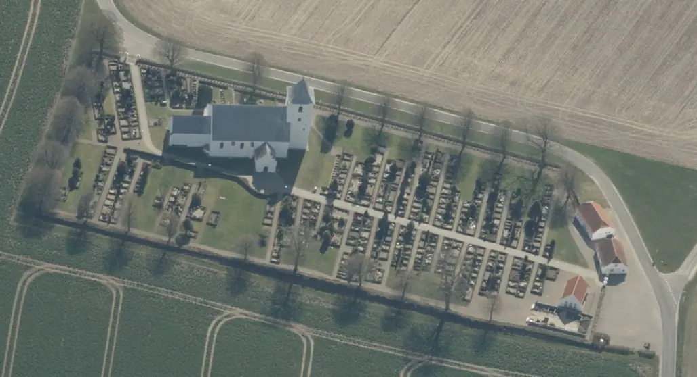
Dies ist ein Luftfoto vom 08.04.2023 von Skråfoto, das die Kirche von Tamdrup zeigt. Skråfoto ist eine Webanwendung, die von Klimadatastyrelsen weltweit kostenlos bereitgestellt wird - Freie Nutzung unter Beachtung der Lizenz: CC BY 4.0. Die Aufnahmen werden alle zwei Jahre erneuert und neben einer Senkrechtaufnahme wird ein Schrägbild aus jeder Himmelsrichtung angeboten, das man über eine Adresssuche aufrufen kann.
Im Jahre 1870 entdeckte man, dass auf der Renaissancekanzel in der Kirche zu Tamdrup insgesamt 29 beschnittene und übermalte Tafeln - wohl seit den Jahren 1600-25 - aufgenagelt waren. Die nachfolgenden, umfassenden Untersuchungen zeigten, dass die Tafeln aus vergoldetem Kupfer bestehen und um ca. 1200 geschaffen wurden. Sie weisen eine Maximalhöhe von 20,9 cm und eine Maximalbreite von 17,4 cm auf. Insgesamt 22 dieser Tafeln zeigen biblische Motive, während 7 Tafeln sich als Illustrationen zu der Überlieferung über einen Geistlichen namens Poppo darstellen (unten von mir rot umrandet).
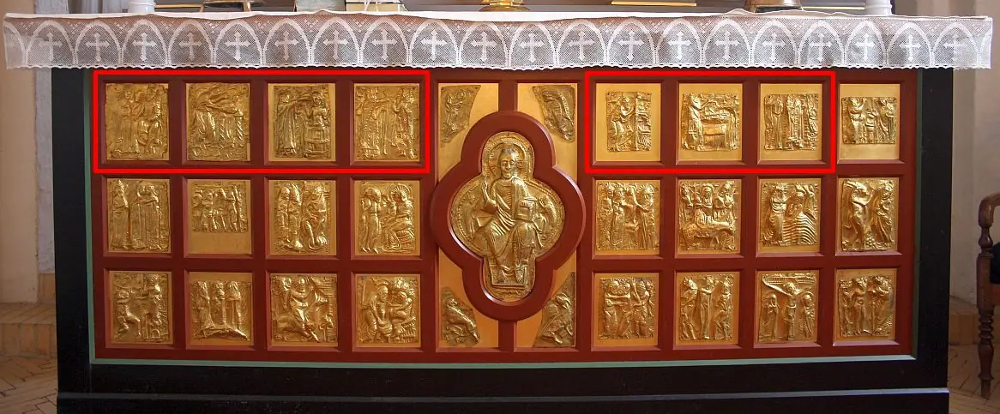
Die Tamdrup Kirche habe ich zuletzt am Freitag, 17.06.2022, im Rahmen meiner 2022er Jütland Wikinger Tour besucht und die nachfolgenden Fotos gefertigt. Zuvor war ich schon mehrfach vor Ort gewesen: Mittwoch 07.08.1991 / Sonntag 16.08.2009 / Donnerstag 22.08.2013.
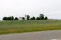 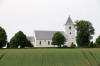 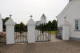 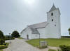 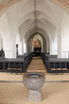 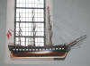 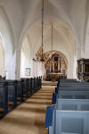 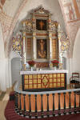 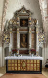 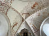


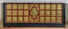 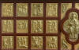 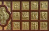 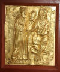 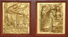 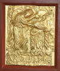 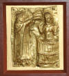 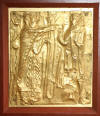 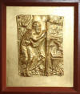 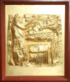 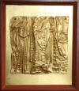


Die Bedeutung der sieben einzelnen Tafeln der Poppo Legende / Maße - jeweils obere Reihe von links:
Linkes Altarfeld - Poppo zeigt dem König den glühenden Handschuh - 20,7 x 17,4 cm / Poppos Feuerprobe - 20,9 x 16,6 cm / Die Taufe Harald Blauzahns - 19,8 x 15,2 cm / Ein (Erz)Bischof versucht Harald Blauzahn zu bekehren - 19,3 x 17,0 cm
Rechtes Altarfeld - Feier der Messe - 15,3 x 15,3 cm / König Harald Blauzahn zeigt seine Treue und Hingabe an die Kirche - 15,8 x 12,3 cm / Gründung eines Frontals - 15,6 x 16,2 cm
Die unten auf der Seite gezeigten Fotos der Altartafeln habe ich bei meinem Besuch vor Ort am 22. August 2013 aufgenommen. Die Fotos im linken Frame habe ich am 16.08.2009 gefertigt.
Die Geschichte zu Poppo und sein Gottesurteil findet sich in einer beeindruckenden Vielzahl nordischer und festländischer Quellen, in lateinischer und nordischer Fassung. Mal hält er ein glühendes Eisen in der Hand, mal trägt er einen eisernen, glühenden Handschuh. Außerdem trägt Poppo in einigen Quellen als weiteres Gottesurteil auch noch ein in Wachs getränktes Hemd und geht damit ohne Verbrennungen durch ein Feuer. In einer Quelle (Jomsvikingasaga) wird der glühende Handschuh/Eisen durch den sogenannten "Pflugscharengang" ersetzt (Über die glühende Schneide eines Pflugs musste beim Pflugscharengang geschritten werden - siehe unten).
Einige Quellen habe ich hier aufbereitet:
Der älteste Bericht stammt von Widukind von Corvey (*ca. 925 - 973) - Rerum gestarum Saxonicarum libri tres (Sächsische Geschichte in drei Büchern, III, LXV):
"Die Dänen waren von alters her Christen, dienten aber nichtsdestoweniger den Götzen nach heidnischer Weise. Es ereignete sich aber, dass bei einem Gastmahl ein Streit über die Verehrung der Götter entstand in Gegenwart des Königs. Die Dänen behaupteten nämlich, Christus sei zwar ein Gott, aber es werde noch andere Götter geben, deren Macht noch größer sei, da sie den Menschen größere Zeichen und Wunder durch sich kundtäten. Dagegen erklärte ein Geistlicher, der jetzt als Bischof ein gottgeweihtes Leben führt, namens Poppa, es gebe nur einen einzigen wahren Gott, den Vater mit dem eingeborenen Sohn Jesus Christus unserem Herrn und dem heiligen Geiste, die Götzen aber seinen Dämonen und nicht Götter. König Harald aber, der eifrig zum Hören, bedächtig zum Sprechen geschildert wird1, fragte ihn, ob er diesen Glauben durch sich selbst bezeugen wolle. Ohne Zögern erklärte er sich bereit. Der König aber gebot, den Geistlichen bis zum folgenden Tage zu bewachen. Als es Morgen geworden war, ließ er eine Eisenmasse von großer Schwere mit Feuer erhitzen und befahl dem Geistlichen für den katholischen Glauben das glühende Eisen zu tragen. Der Bekenner Christi ergriff das Eisen ohne Besinnen und trug es so lange, als es der König selbst befahl, zeigte allen die unverletzte Hand und erwies so vor der ganzen Versammlung die Wahrheit des katholischen Glaubens. Nach dieser Probe bekehrte sich der König, beschloss, Christum allein als Gott zu verehren, befahl seinen heidnischen Untertanen, die Götzen zu verwerfen, und erzeigte fortan den Priestern und Dienern Gottes die gebührende Ehre. Aber auch dies wird mit Recht dem Verdienste deines Vaters zugeschrieben, durch dessen Eifer in jenen Gebieten die Kirchen und der Priesterstand zu so leuchtenden Augen gekommen sind."
1 - Jakobusbrief 1,19: "Denkt daran, meine geliebten Brüder: Jeder Mensch soll schnell bereit sein zu hören, aber zurückhaltend im Reden und nicht schnell zum Zorn bereit."
Quelle: Ausgewählte Quellen zur Deutschen Geschichte des Mittelalters, Freiherr vom Stein-Gedächtnisausgabe, Band VIII, Quellen zur Geschichte der sächsischen Kaiserzeit, Widukinds Sachsengeschichte, Unter Benützung der Übersetzungen von Paul Hirsch, Max Büdinger und Wilhelm Wattenbach, neu bearbeitet von Albert Bauer und Reinhold Rau, 4. unver. Auflage 1992, WBG, Buch 3, Kapitel 65, S. 168 ff.
Thietmar von Merseburg (*ca. 975 - 1018) schildert das Geschehen der Taufe eindrucksvoll in seiner Chronik (Thietmar II,14):
"Damals (961) erneuerte der Priester Poppo bei den Dänen, wo Harald herrschte, das verachtete Christentum. Er tadelte nämlich König und Volk, weil sie sich nach dem Abfall vom Gottesdienst ihrer Vorfahren Göttern und Dämonen hingegeben hatten, und versicherte ihnen, es gäbe nur einen Gott, bestehend in drei Personen. Auf die Frage des Königs, ob Poppo seine Worte durch das glühende Eisen bekräftigen wolle, erklärte er sich freudig hierzu bereit; am folgenden Tage trug er ein sehr schweres, geweihtes Eisen an den vom Könige bezeichneten Ort; dann hob er die unverletzte Hand in die Höhe. Hoch erfreut über dieses Wunder unterwarf sich der König mit allen den Seinen sofort in Demut dem Joche Christi und gehorchte bis zu seinem Ende als gläubiger Christ den Geboten Gottes. Als der Kaiser davon erfuhr, berief er den hochwürdigen Poppo zu sich, fragte ihn, ob er ein Streiter Christi sei, und erhob ihn zur Bischofswürde."
Quelle: Ausgewählte Quellen zur Deutschen Geschichte des Mittelalters, Freiherr vom Stein-Gedächtnisausgabe, Band IX, Thietmar von Merseburg, Chronik, Neu übertragen und erläutert von Werner Trillmich, 1970, WBG, Buch 2, Kapitel 14, S. 48/49.
Auch Adam von Bremen (*wohl vor 1050 - wohl 1081) schreibt in seiner Gesta Hammaburgensis ecclesiae Pontificum (Bischofsgeschichte der Hamburger Kirche), II, 35:
"Erik", so sagte er, "herrschte über die beiden Reiche der Dänen und das der Schweden; auch er war ein Heide und den Christen gegenüber sehr feindselig. Als Gesandter des Kaisers und des Bischofs von Hamburg soll ihn ein gewisser Poppo aufgesucht haben, ein frommer und kluger Mann, der damals für Schleswig geweiht war, um für das Dänenreich und den Schutz der Christen des Kaisers Anrechte geltend zu machen. Als die Barbaren nach ihrer Gewohnheit ein Zeichen verlangten, soll er als Machterweis für das Christentums ohne Zögern sogleich ein glühendes Eisen in die Hand genommen haben und offensichtlich unverletzt geblieben sein."
Quelle: Ausgewählte Quellen zur Deutschen Geschichte des Mittelalters, Freiherr vom Stein-Gedächtnisausgabe, Band XI, Quellen des 9. und 11. Jahrhunderts zur Geschichte der Hamburgischen Kirche und des Reiches, Adam von Bremen, Bischofsgeschichte der Hamburger Kirche, neu übertragen von Werner Trillmich, 1978, WBG, Buch 2, Kapitel 35, S. 271.
Jomsvikingasaga (um 1200) - Kapitel 11 - König Harald nimmt das Christentum an:
"Dann kamen sie alle zu dem Thing, und es war das zahlreichste Thing, das zu dieser Zeit im Königreich des dänischen Königs abgehalten wurde. Am Hof steht der Bischof, der beim Kaiser war und dessen Name Poppo war, und er predigt mit Beredsamkeit vor der Hofversammlung den Glauben und hält eine lange und gute Rede. Nachdem er die Rede gehört hat, spricht König Harald für sich und für Håkon und antwortet: Man sollte nicht erwarten, sagt er, dass ich allein durch Worte bekehrt werde, wenn ich das nicht auch durch einige Wunder sehe dieser Glaube, den du befiehlst, hat mehr Kraft als der Glaube, den wir bereits haben. Obwohl der König sprach, war es Graf Håkon, der hinter den Worten stand, weil er lieber etwas anderes tun würde, als das Christentum anzunehmen. Darauf antwortet der Bischof so: Es darf nicht fehlen, sagt er, dass wir die Stärke dieses Glaubens beweisen müssen. Holt jetzt glühendes Eisen, aber vorher werde ich Messe singen und dem allmächtigen Gott ein Opfer bringen, und dann werde ich im Vertrauen auf die Heilige Dreifaltigkeit neun Schritte auf dem glühenden Eisen gehen, und wenn Gott mich vor dem Brennen schützt, damit meine Körper ganz unversehrt und unverbrannt ist, dann müsst ihr alle den richtigen Glauben annehmen. Und jetzt sind sie König Harald und Graf Håkon und alle ihre Männer sich einig, dass sie, wenn er über glühendes Eisen gehen kann, ohne sich zu verbrennen, dann zum Christentum übergehen müssen. Nun ist es so, dass der Bischof die Messe singt, und nach der Messe geht er gestärkt durch den Leib und das Blut des allmächtigen Gottes zum Prozess, und er trägt das volle bischöfliche Gewand, als er das Eisen betritt. Und Gott beschirmte ihn, sodass sein Körper keine Brandwunden hatte und sein Gewand nicht beschädigt wurde. Als der dänische König Zeuge dieses Wunders wird, nimmt er sofort den Glauben an und lässt sich mit all seinen Männern taufen, und der König legt großen Wert auf dieses Wunder, und jetzt wird jeder in der dänischen Armee bei dieser Gelegenheit getauft. Jarl Håkon ist sehr zurückhaltend, den Glauben zu akzeptieren, aber er findet auch die zweite Bedingung schwer. Am Ende lässt er sich jedoch taufen, bittet um Erlaubnis zur Abreise und will schnell nach Hause. Der Fall stellt sich heraus, dass Håkon dem Kaiser versprechen muss, Norwegen zu christianisieren, wenn er kann, und ansonsten aus seinem Königreich fliehen müsste. Dann geht Earl Håkon dorthin, wo seine Schiffe waren, und er segelt davon, bis er nach Norwegen zurückkehrt."
Siehe auch: https://edition-pommern.com/pommernkunde/historisches/jomskrieg/
In der Sammlung Thule, Altnordische Dichtung und Prosa, Band 14, Herausgegeben von Felix Niedner, 1965, Snorris Königsbuch (Heimskringla), Erster Band, Kapitel 27 - Die Taufe König Harald Gormssohn und Jarl Hakons - findet sich auf der S. 226 die Passage:
"...Da verkündete der heilige Bischof Poppo den Christenglauben vor König Harald, und er trug glühendes Eisen in der Hand und zeigte dem König, dass seine Hand nicht verbrannt war. Nun ließ sich König Harald mit dem ganzen Dänenheer taufen..."
Die Heimskringla ist wohl um 1230 verfasst worden.
So liest sich das in Altnordisch: "En þá boðaði Poppo, biskup heilaga trú fyrir Haraldi konungi, ok hann bar glóanda járn í hendi sér, ok sýndi Haraldi konungi hönd sína úbrunna. Síðan lét Haraldr konungr skírast með allan Danaher".
Literaturhinweise:
Geschichte König Heinrich des Ersten und Kaiser Otto des Großen - nach den Annalen Wittekinds von Korbei mit historisch-geographischen Anmerkungen, von Pollmächer, Christian Salomon (*1762 - 1826, Pfarrer), 1790, S. 154 ff.
Widukind von Korvei: ein Beitrag zur Kritik der Geschichtschreiber des zehnten Jahrhunderts, von Rudolf Köpke (*1813 - 1870, Historiker), Berlin, 1867, S. 173ff.
Das Gottesurteil des Poppo, von Claudius Frhr. von Schwerin (*1880 - 1944, Rechtshistoriker), - In: Zeitschrift der Savigny-Stiftung für Rechtsgeschichte: Germanistische Abteilung vol. 58, 1938, S. 69-107.
The Poppo Legend, von Lene Demidoff, in: Medieval Scandinavia 6, 1973, S. 39-68
Poppo's Ordeal and the Conversion of the Danes, von Thomas Foerster, Zeitschrift für Literaturwissenschaft und Linguistik 156, 2009, S. 28-45
Poppo's Ordeal: Courtier Bishops and the Success of Christianization at the Turn of the First Millennium, von Michael H. Gelting, Viking and Medieval Scandinavia 6, 2010, S. 101-133.
In dieser Ausarbeitung wird Poppo als Folkmar (18.07.969) identifiziert. Der Autor geht davon aus, dass Widukinds entsprechende Passage im Jahr 968 niedergeschrieben wurde und Poppos Ordal im Jahr 963 stattfand. Folkmar wurde im Jahr 965, nach dem Tod von Erzbischof Brun (Auch bezeichnet als Bruno I. von Sachsen, *925 - 11.10.965), neuer Erzbischof von Köln. Zuvor war Folkmar dessen Mitarbeiter. Im Jahr 968 gabe es in Deutschland zwei Bischöfe die den Namen Poppo trugen. Bischof Poppo I. von Würzburg und eben Bischof Folkmar. Der vielfach angenomme Bischof Poppo von Schleswig kann es zeitlich überhaupt nicht gewesen sein, da er dort erst zw. 1010 und 1016 im Amt war - siehe Katalog der Bischöfe von Schleswig (entstanden vermutlich zw. 1043 und 1085).
Auf zwei Tafeln - Altar linke Hälfte, obere Reihe, Tafel zwei und drei von links - wird gezeigt, wie man sich zur Zeit ihrer Entstehung Poppos Eisenprobe und die Taufe Harald Blauzahns (*um 910 - 01.11.985/86) vorstellte. Bei der Eisenprobe trägt Poppo einen Handschuh aus Eisen, den er über ein Feuer hält und mit einer sprechenden Gebärde bedeutet, wie unberührt er davon ist.
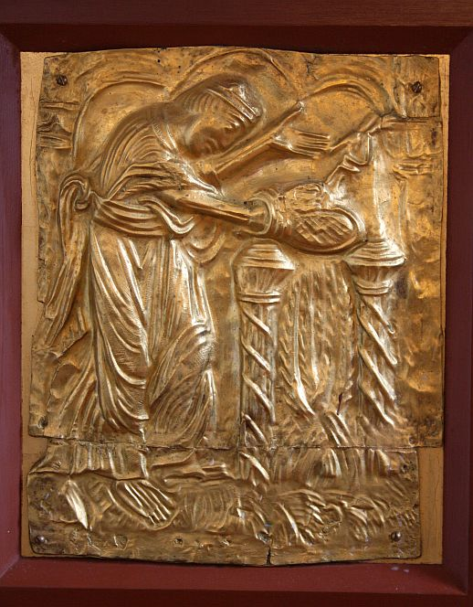
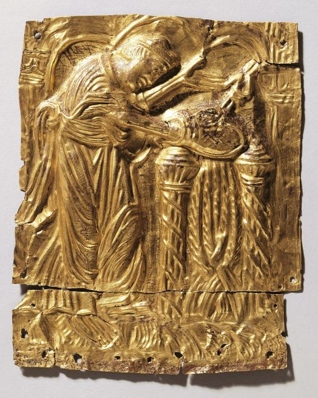
Kopie am Altar Unverändertes Original - Digitale Sammlung Nationalmuseum Kopenhagen
Fotograf Jesper Weng - Lizenz: CC BY-NC-ND 4.0
Bei der Taufe Harald Blauzahns (*um 910 - 01.11.985/86) wird dieser - nach damaliger Sitte - nackt in ein mit Wasser gefülltes Fass gestellt.
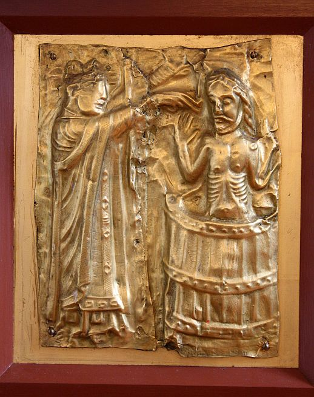
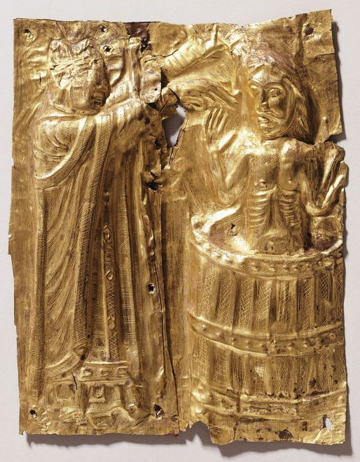
Kopie am Altar Unverändertes Original - Digitale Sammlung Nationalmuseum Kopenhagen
Fotograf Jesper Weng - Lizenz: CC BY-NC-ND 4.0
Die wertvolle Tafel mit der Taufe Blauzahns ist ein beeindruckendes Zeugnis der dänischen Missionsgeschichte. Sie ist eine von sieben Tafeln, die vom Leben Bischof Poppos berichten, der später heiliggesprochen wurde. Möglicherweise waren sie ursprünglich an einem Schrein mit Reliquien des heiligen Poppo befestigt gewesen. Denkbar ist aber auch, dass sie zu einem Altaraufsatz gehörten.
Wie es auch zugegangen sein mag, sicher ist, dass König Harald zu dem christlichen Glauben übertrat. Dies war gegen Ende der Amtszeit des Erzbischofs Brun von Köln (953-965). Wahrscheinlich erfolgte sein Glaubenwechsel jedoch aus politischen Gründen. Das deutsche Reich wollte damals seine Macht auch nach Dänemark ausdehnen und den Vorwand benutzen, dass man das Land christianisieren wolle. Wenn König Harald zu der neuen Lehre übertrat, war er eher Herr im eigenen Haus. Wie viele ihm gefolgt sind, ist eine andere Frage. Erst wesentlich später waren die Dänen in ihrer Gesamtheit zum neuen Glauben übergewechselt.
Die Altarplatten in der Kirche von Tamdrup sind durch Kopien ausgewechselt worden, als die Originale im Jahre 1873 nach Kopenhagen verbracht wurden. Dort werden sie heute im Nationalmuseum aufbewahrt.
Infos unter: http://www.tamdrupkirke.dk/ (auch Infos zu den Öffnungszeiten - nur auf dänisch). Die Kirche konnte dendrochronologich auf das Jahr 1125 datiert werden.
So stellte sich der niederländische Maler Abraham Bloemaert (*25. Dezember 1564 in Gorinchem, Holland - 27. Januar 1651 in Utrecht) Poppos Feuerprobe vor.
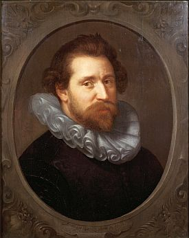
Bildquelle: Wikipedia - Lizenz: Public DomainDas Gemälde befindet sich heute in Kopenhagen in dem "Statens Museum for Kunst" (Dänemarks Nationalgalerie).
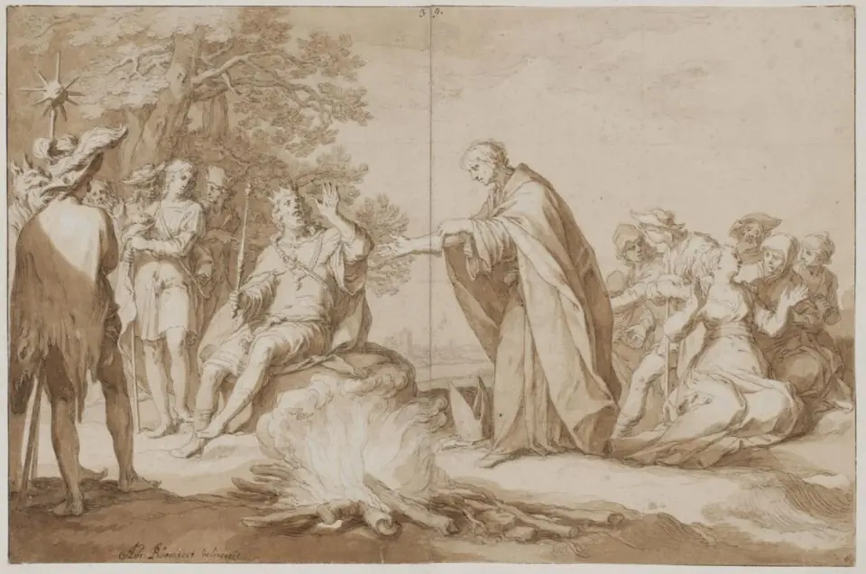
Das Bild unterliegt keinerlei Urheberrecht mehr - Lizenz: Public Domain.
In Flickr findet sich wohl seit Februar 2013 von der Vejle Kommune die Gruppe "Jelling - rigen og regenten" und in deren Fotostream zahlreiche tolle Zeichnungen. Darunter finden sich diese beiden Zeichnungen: Poppos jernbyrd / Haralds dåb - Illustration: Ida Maria Schouw Andreasen, Benni Schouw Andreasen, Vejle Kommune - Lizenz jeweils: CC BY 2.0
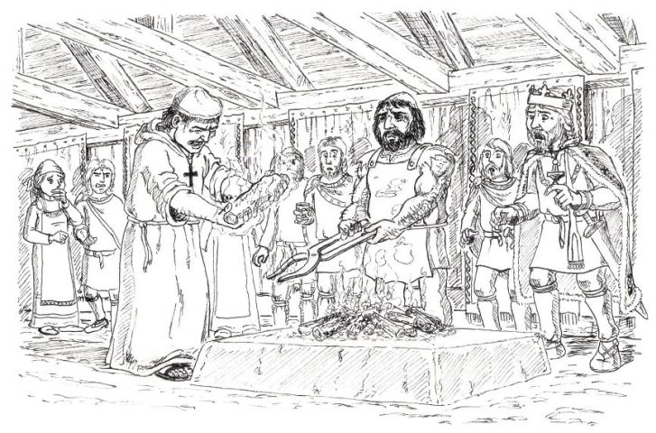
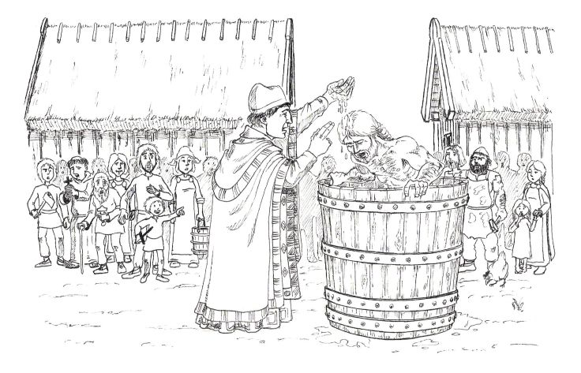
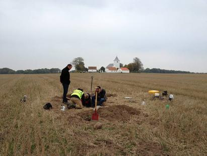
Fundort - im Hintergrund die Tamdrup Kirche - Urheberrecht Foto: Horsens MuseumIn der unmittelbaren Umgebung zur Kirche wurde im Oktober 2013 durch einen Schatzsucher, Finn H. Larsen, mit seinem Metalldetektor ein großer wikingerzeitlicher Schatzfund aus dem 11. Jahrhundert auf einem Acker gemacht - ein Bericht in dänischer Sprache mit Fotos findet sich hier. Insgesamt 28 Münzen und 30 Fragmente von Münzen, hauptsächlich aus der Zeit Svend Estridsens (König zw. 1047 und 1074) beinhaltet dieser Fund, der durch das Museum in Horsens untersucht wurde. Der Untersuchungsbericht des Museums zu diesem Fund findet sich hier.
Im April 1849 war in der Nähe bereits der sogenannte "Enner-Fund" gemacht worden. Der Schatz bestand aus 1315 ganzen Silbermünzen und etwas gebrochenem Silber in Form von Münzfragmenten, gebrochenem Silber von Schmuck und rohen Silberbarren. In der Vorbereitung zum Bau eines neuen Gefängnisses wurden in der Region in 2001 weitere Nachuntersuchungen, -forschungen angestellt. Ein Bericht darüber in dänischer Sprache findet sich hier.
Informationen in deutscher Sprache über die Webseite des Touristikverbandes "Visit Denmark" finden sich hier.
Ein 28-minütiger dänischsprachiger Film des dänischen TV Sender "TV2" über diese Kirche findet sich hier.
Auf den Webseiten des Dänischen Nationalmuseum in Kopenhagen - Danmarks Kirker - kann man eine in dänischer Sprache - ergänzt durch englischsprachige Bilderklärungen/Zusammenfassung - gehaltene 133-seitige, bebilderte Abhandlung als pdf-Datei zur Baugeschichte/Innenausstattung der Kirche von Tamdrup aus den Jahren 1996-2002 abrufen.
Die Original Altartafeln waren in der Sonderausstellung Thietmars Welt. Ein Merseburger Bischof schreibt Geschichte (15.07. bis 04.11.2018) im Merseburger Dom ausgestellt.
In der schleswig-holsteinischen Gemeinde Sieverstedt ist der sogenannte Poppostein anzutreffen. Eine sehr ausführliche Abhandlung von Herrn Heinz Fröhlich findet sich auf den Webseiten der Gemeinde.
Mehrere Fotografien mit Informationen, den Geodaten usw. finden sich auf den Webseiten "www.grosssteingraeber.de"
Um die Anlage herum befinden
sich 6 Grenzsteine. Sie tragen die Jahreszahl und das
Wappen des damaligen
Königs Friedrich VII. von Dänemark, der den Grabhügel 1859
gekauft
hatte.
Das Großsteingrab befindet sich etwa 10 km nördlich von Schleswig,
ganz in der Nähe der L317. Von einem Parkplatz an der Straße in Richtung
Flensburg aus führt ein ca. 300 m langer ausgeschilderter Weg bis zu der Anlage.
Auf den Webseiten des Dänischen Nationalmuseums, Digitale Sammlung, kann man sich zahlreiche Fotos zur Kirche, zu den Restaurierungsarbeiten und natürlich zu den Altartafeln anschauen.